En indumentaria la marca no se aplica sobre el producto: es el producto. Cada drop necesitaba una gráfica con vida propia, y todos tenían que seguir siendo Birdie.
Un logo fijo hubiera matado la marca; seis logos sueltos, también.
La salida fue separar dos capas. Abajo, una marca madre que no se toca: el logotipo manuscrito, la B en círculo y una sola regla de color —blanco sobre negro, siempre. Arriba, una gráfica libre por cápsula, con permiso para cambiar de registro tipográfico por completo.
Lo que sostiene el conjunto no es un estilo, es el sistema de aplicación: pecho chico al frente, B en la espalda, etiqueta en la manga. La misma prenda, la misma foto, la misma distancia. Cambia el dibujo y nada más.
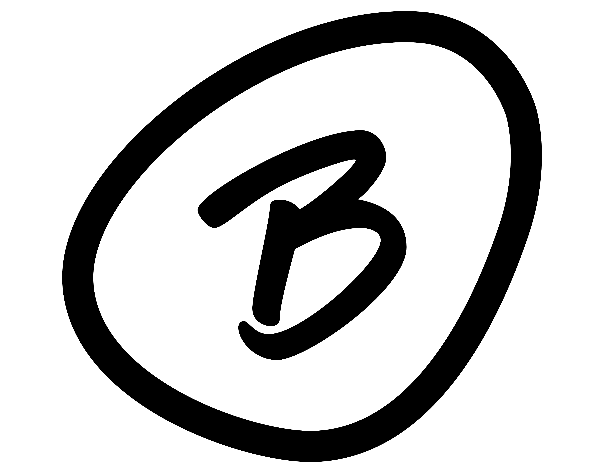
La B en círculo es lo que aguanta el tamaño chico: bordado en la espalda, tejido en la etiqueta de la manga, avatar en el feed. Es la firma que permite que el frente haga cualquier cosa.
El trazo es deliberadamente irregular —círculo cerrado a mano, no un anillo perfecto—. En una marca de skate, la prolijidad geométrica leería a corporativo.
@birdie.cloth ↗Cada drop trae su propio lenguaje: display retro, line-art, letra dibujada, distorsión, script fino. Puestas una al lado de la otra parecen seis marcas; en la percha son la misma.
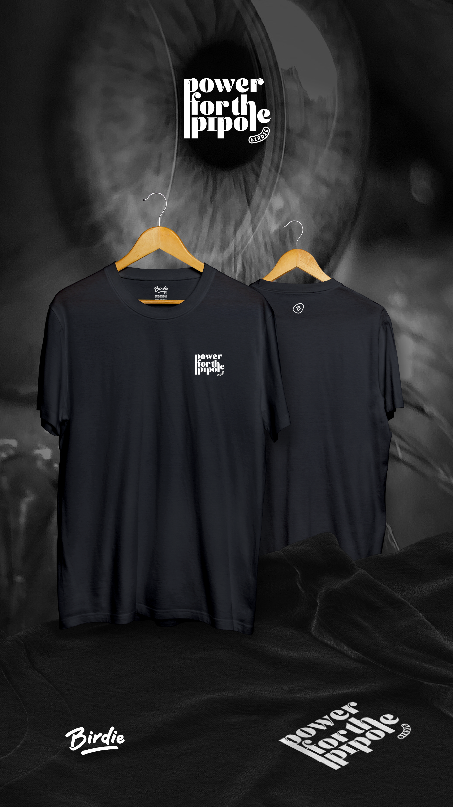
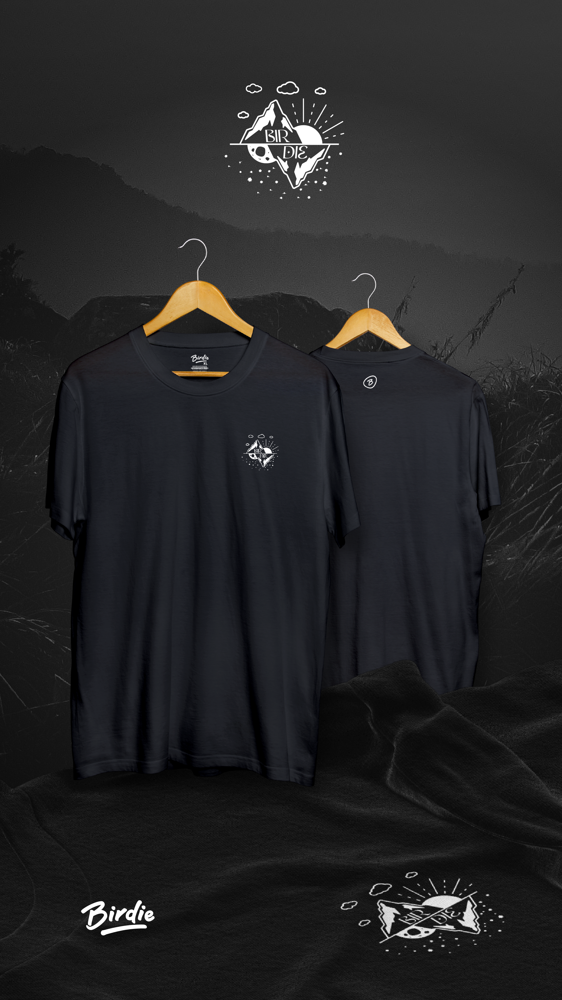
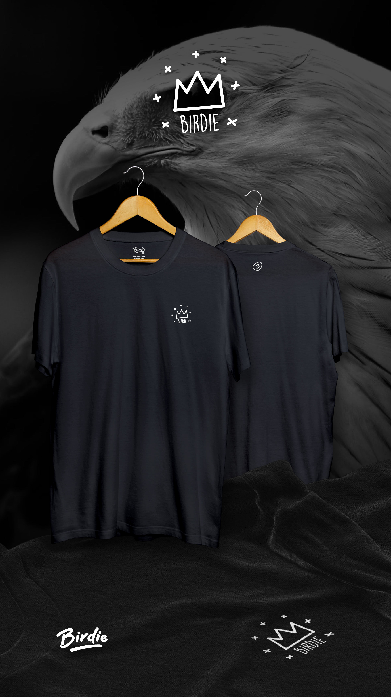
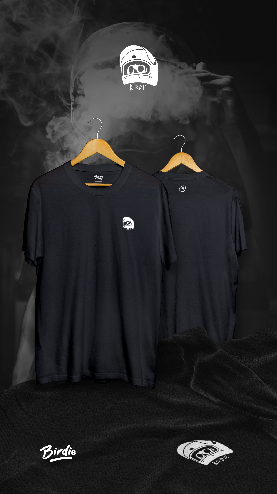
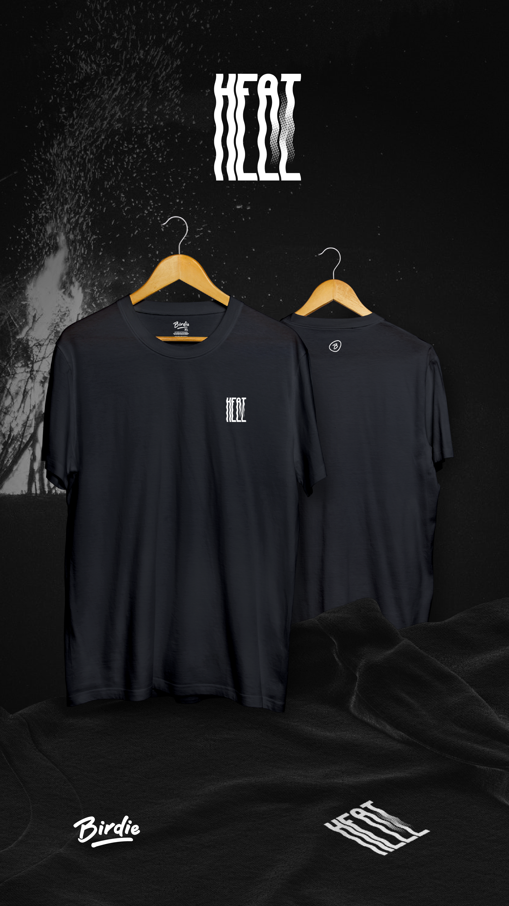
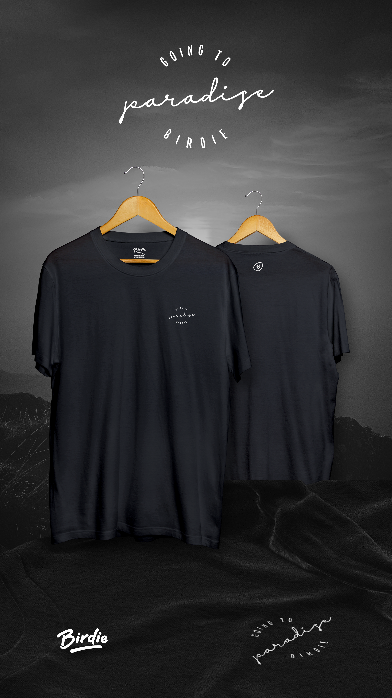
La prueba de que el sistema funciona no está en la presentación: está en la calle, con la prenda puesta y el logo a doce centímetros del pecho.
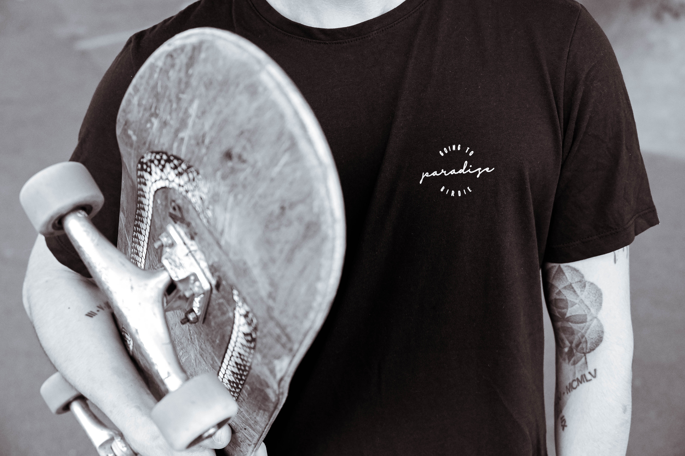
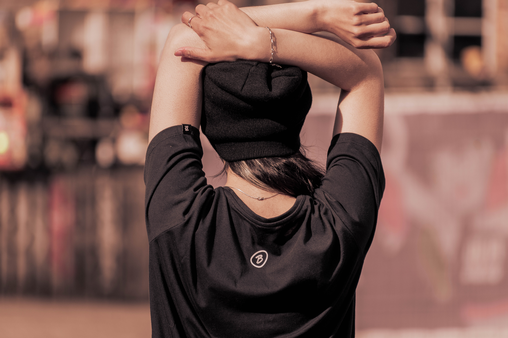
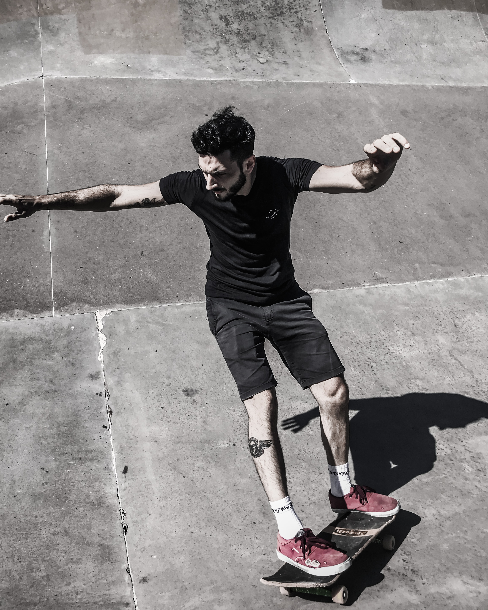
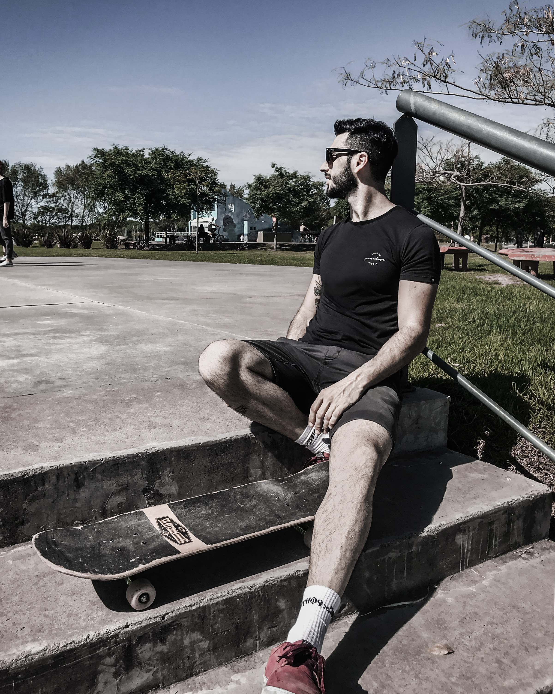
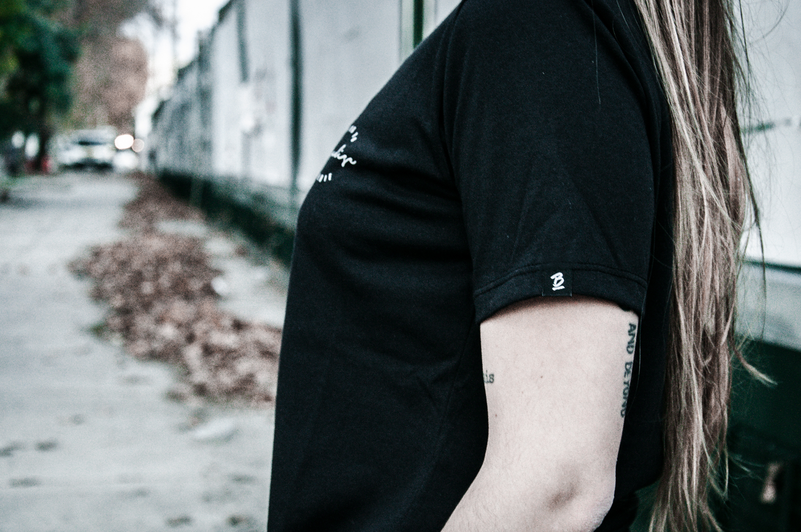
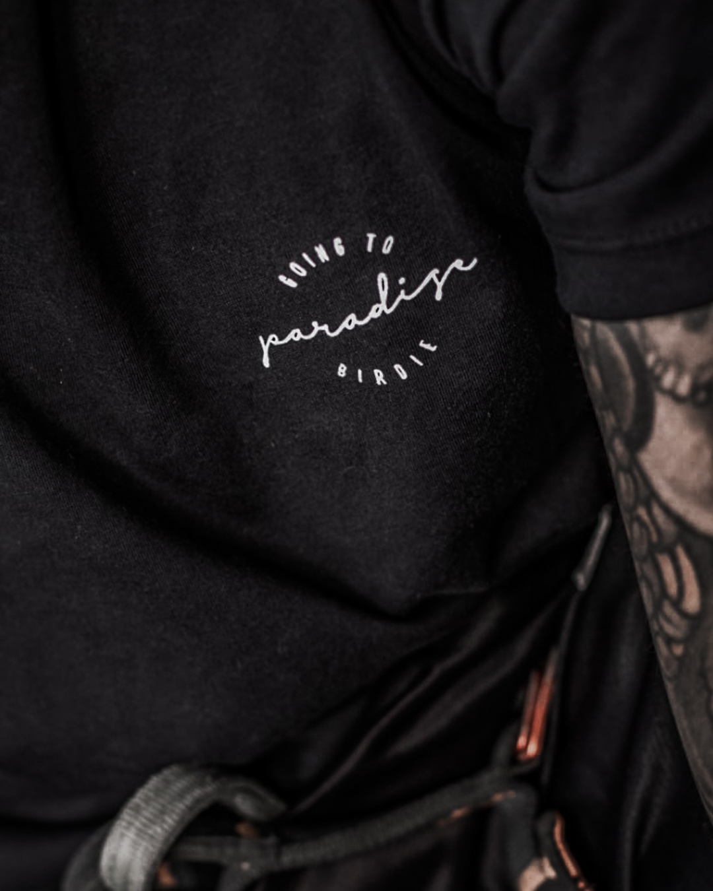
Una marca puede cambiar de estilo en cada temporada si el sistema de aplicación no se mueve.
Es lo contrario del manual clásico, que fija el estilo y libera el resto. Acá la constante es dónde va cada cosa, no cómo se dibuja. Ese criterio después me sirvió en packaging: en Thiafel el envase hace el mismo trabajo que la percha.
Ver Thiafel →